COCA Hands-on Practice
Bring your laptop. You will need internet access.
By the end of this session, you can:
Without looking at your notes:
What is a corpus? How is it different from just “a lot of texts”?
Discuss with your neighbor for 2 minutes.
Linguistics studies language.
Applied linguistics studies how language is used, learned, taught, and analyzed in real life.
Corpus linguistics is one of its methods.
A corpus is:
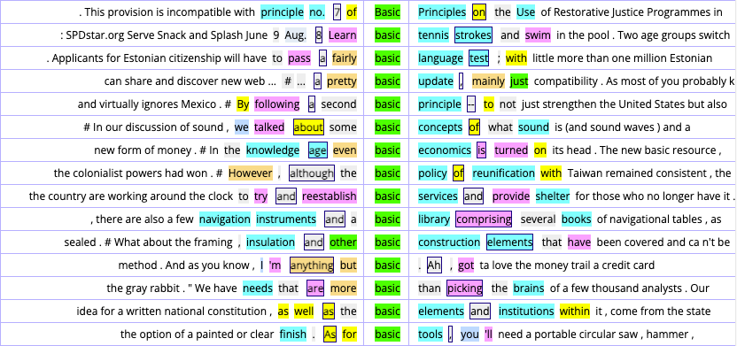
Even expert speakers:
A corpus helps us test patterns in real data.
| Qualitative | Quantitative (corpus) | |
|---|---|---|
| Aim | depth and context | patterns and frequency |
| Sample | small, purposeful | large, systematic |
| Strength | rich detail | objective, generalizable |
| Weakness | limited generalization | less context |
You want to know: “Do Americans say ‘delicious’ or ‘tasty’ more often?”
COCA = Corpus of Contemporary American English
Because it covers many registers, we can ask: where is a word used, how often, and with what other words.
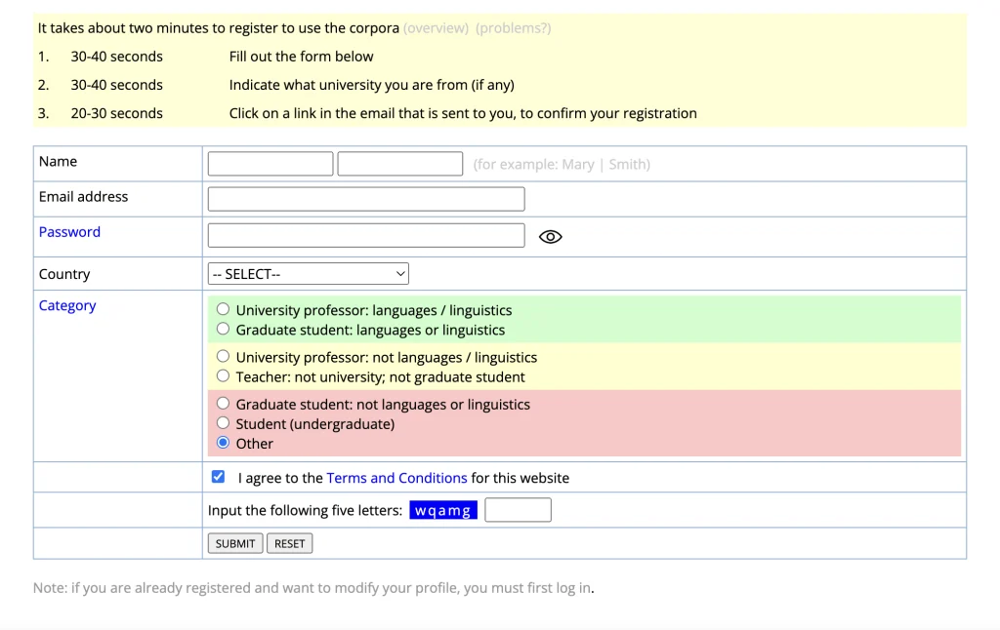
Register your COCA account.
Check your spam folder if the confirmation email does not arrive within 2 minutes.
Raise your hand when you are logged in.
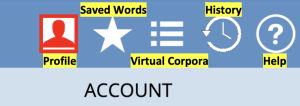
Directly under the COCA name:
| Tab | What it shows |
|---|---|
| SEARCH | where you type words and phrases |
| FREQUENCY | how often your search appears |
| CONTEXT | concordance lines (examples in sentences) |
| OVERVIEW | what the corpus can do |
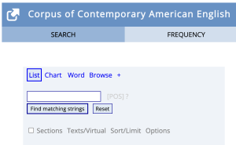
The FREQUENCY tab lists all matching forms and their frequency.
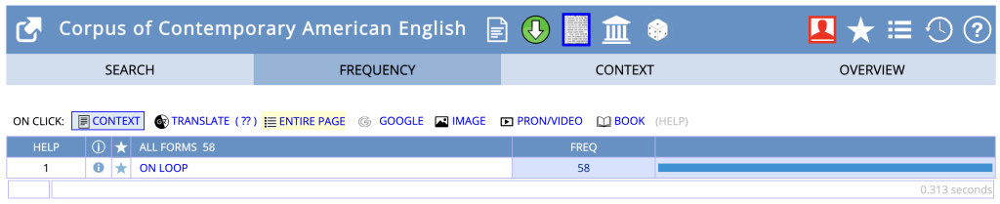
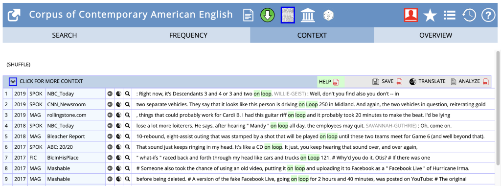
Each line shows your word in a real sentence, with the date, text type (magazine, spoken, fiction…), and source name.
Search for linguistics with the List function.
Click Reset under the search box before your next search.
*Attach * to part of a word to find all words that start or end with it:
be* → words starting with “be”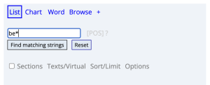
With a space, be * → phrases starting with “be”.
A teacher looking for words with the prefix im- can search im*.
|Put | between words to compare them:
talk|speak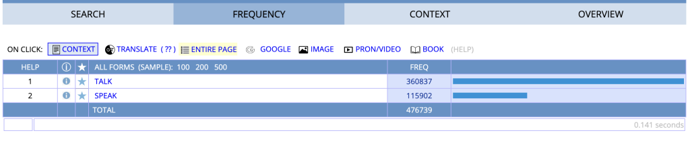
[ ]Words have many forms: talk, talks, talking, talked.
Search [talk] to get all forms of the word, ranked by frequency.
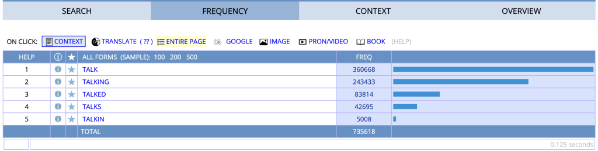
Click [POS] next to the search box to limit the search to one part of speech.
Example: search run as a verb only → select verb.ALL.
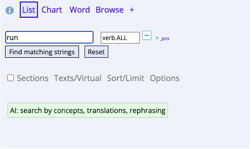
Using the List function, compare the frequency of delicious and tasty.
The Chart tab shows where a word appears:
Enter a word and click See frequency by section.
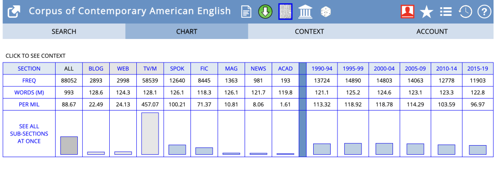
Wildcards and | work here too.
Using the Chart function, search for the word linguistics.
Which section (register) uses this word most often?
Why do you think that is?
The Word tab gives dictionary-style information plus corpus data:
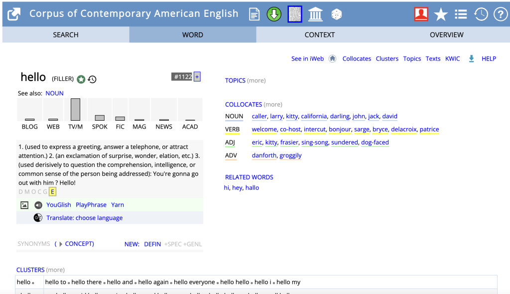
Using the Word function, search for amuse.
List the verb collocates of this word.
(Example format: entertain, smile, …)
Find the most common words next to your word.
Click the + button on the SEARCH tab → COLLOCATES.
Results are grouped by part of speech: NOUN, ADJ, VERB, ADV.
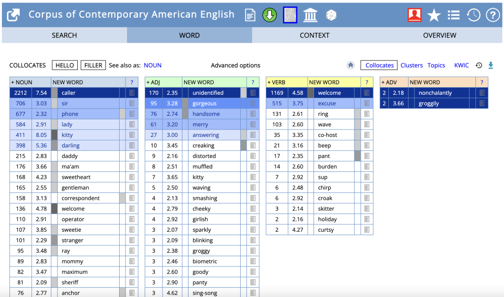
Using Collocates, search for fantastic.
Set the window to 1 word on the left and 3 words on the right.
COMPARE shows the collocates of two words side by side.
Enter one word in each box and click Compare words.
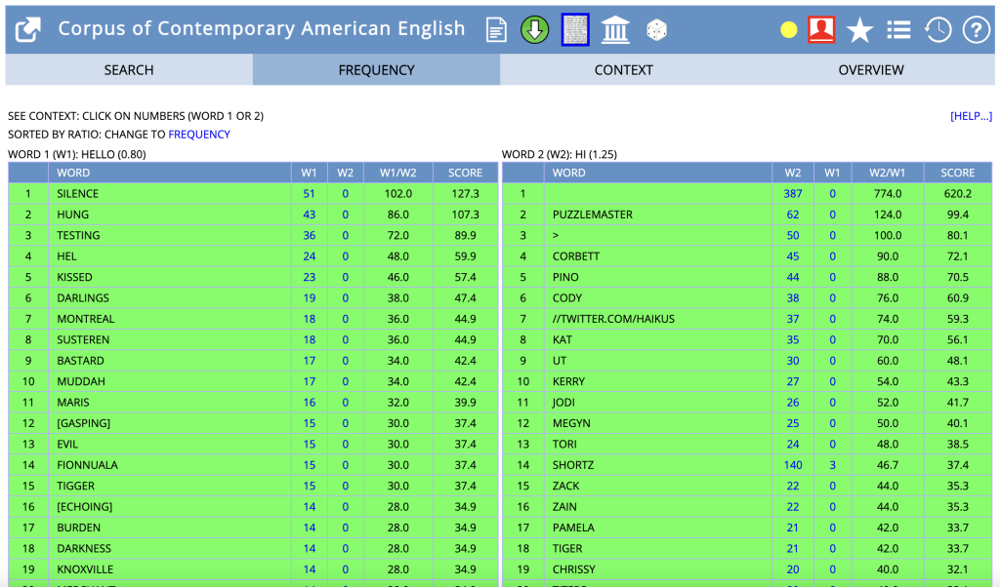
Using Compare, compare the words eat and drink.
Were you surprised?
KWIC = Key Word In Context — the last option under the + menu.
Your word lines up in one column, with its context on both sides. Parts of speech are color-coded.
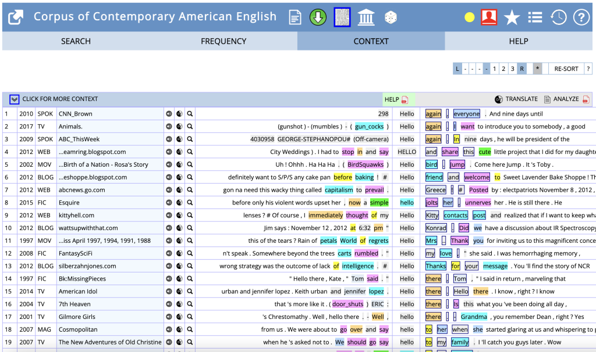
Use the buttons at the top right:
Sorting this way makes patterns easy to see.
Using KWIC, search for take.
Sort the results. What word most frequently appears immediately after “take”?
Under the search button of each menu:
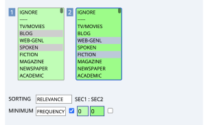
Using Sections + List, search for book only in TV/Movies and Fiction.
Which section does it appear in more frequently (per million words)?
Wechsler (2018) asked: How does the verb whine combine with other words?
Specifically:
| Code | Meaning | Example |
|---|---|---|
_v |
any verb form | WHINE_v → whine, whines, whined, whining |
_i |
preposition | to_i → only the preposition to |
_cst |
complementizer that | that_cst → only that as a clause starter |
VVI |
infinitive verb | TO VVI → to + base verb |
xxx ... xxx |
pattern in order | xxxWHINE_v that_cstxxx → “whine that” |
| Pattern | Valid tokens found |
|---|---|
| WHINE (all verb forms) | 2,915 |
| WHINE + that-clause | 67 |
| WHINE + to-PP (to a person) | 36 |
| WHINE + at-PP | 31 |
| WHINE + to-PP + that-clause | 4 |
| WHINE + at-PP + that-clause | 0 |
| WHINE + infinitival phrase | 6 |
| WHINE + indirect question | 0 |
The prediction was supported:
So whine can introduce a message with to, but not with at.
Also, whine reports assertions (whined that…) and commands (whined to be held), but it does not report questions — every question search returned 0.
Which of these are real manner-of-speaking uses of whine? Which are miscounts?
| You want… | Type… |
|---|---|
| one word or phrase | beautiful |
| words starting with “im-” | im* |
| phrases starting with “be” | be * |
| compare two words | delicious|tasty |
| all forms of a word | [work] |
| You want… | Type… |
|---|---|
| a specific part of speech | word + [POS] menu |
| words near your word | COLLOCATES menu |
| two words’ collocates | COMPARE menu |
| your word in context | KWIC menu |
| a specific grammar tag (advanced) | word_v, to_i, that_cst |
| a pattern in exact order (advanced) | xxxWHINE_v that_cstxxx |
10-minute break.
When you come back: make sure you can log in to COCA and run a List search.
Work alone or in pairs.
Your mini report should answer:
*ful, *less) — which ending is more common?_v tag.You have about 30 minutes to search and prepare your report.
Ask for help any time.
Each person/pair: 2–3 minutes.
Today you:
Corpus skills will be useful for your group presentation and final essay.
Video tutorials:
Part 2 is adapted from:
Advanced English II